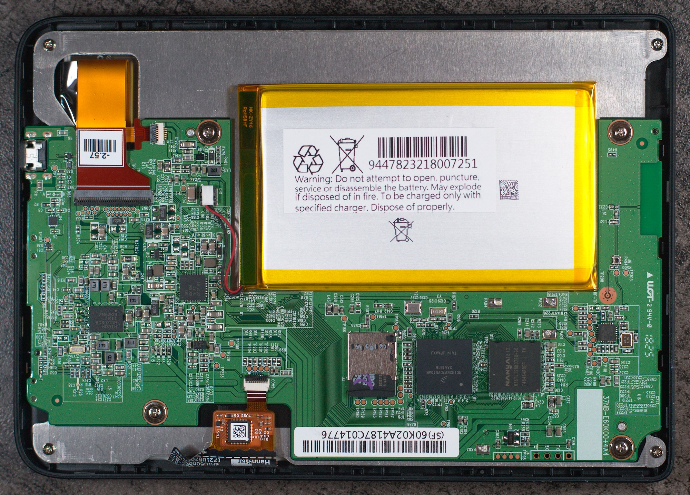

Kobo Clara HD (kobo-clara)
|

Insides |
|
| Manufacturer | Kobo |
|---|---|
| Name | Clara HD |
| Codename | kobo-clara |
| Released | 2018 |
| Category | testing |
| Original software | Kobo Firmware |
| Hardware | |
| Chipset | Freescale i.MX6 SLL |
| CPU | 1x 1 GHz Cortex-A9 |
| GPU | PXP + EPDC |
| Display | 1448x1072 6 inch e-paper |
| Storage | Internal 8GB SD slot |
| Memory | 512MB |
| Architecture | armv7 |
| Unixbench Whet/Dhry score | 213.3 |
{kind=link}
| USB Networking |
Works
|
|---|---|
| Flashing |
|
| Touchscreen |
Works
|
| Display |
Works
|
| WiFi |
Works
|
| FDE |
Works
|
| Mainline |
Works
|
| Battery |
Works
|
| 3D Acceleration |
Unavailable
|
| Audio |
Unavailable
|
| Bluetooth |
Unavailable
|
| Camera |
Unavailable
|
| GPS |
Unavailable
|
| Mobile data |
Unavailable
|
| SMS |
Unavailable
|
| Calls |
Unavailable
|
| USB OTG |
Works
|
| NFC |
|
| Accelerometer |
Unavailable
|
|---|---|
| Magnetometer |
|
| Ambient Light |
|
| Proximity |
|
| Hall Effect |
|
| Barometer |
|
| Power Sensor |
|
| Keyboard |
|
|---|---|
| Touchpad |
|
| USB-A |
|
| HDMI/DP |
|
| Ir TX |
|
| TrustZone |
|
| FOSS bootloader |
Works
|
Contents
Contributors
- MartijnBraam
- Andi
Installation
An original Kobo Clara SD card or a copy (e.g. via dd) is recommended. The unpartitioned space at the beginning of the SD card contains the E-ink panel waveform information. This information is device specific and is copied to /lib/firmware/imx/epdc/epdc.fw on boot. See the original Pull Request for more information.
Replacing internal µSD
Internal µSD card can be replaced by something bigger. Favourite way to install software is to clone the SD card and keep the old one as backup or have at least the hidden waveform partition in place. before doing pmbootstrap install
So basically pull out µSD and connect to your PC and do:
dd if=/dev/sdX of=clara-backup.img
replace with something bigger (in reality only the waveform is needed but for simplicity) and do:
dd if=clara-backup.img of=/dev/sdX
and then use that sdcard with pmbootstrap install --sdcard
Hardware
Wireless
The Kobo Clara contains the Realtek RTL8189FTV , a 802.11bgn 2.4G single-chip solution. Using the mainline kernel this is supported by the RTL8189fs branch of this repo . Note this prints a lot of information to dmesg (prefixed with 'RTL871X').
Wi-Fi should be enabled in the default Kobo firmware before booting into custom firmware.
Display
The Kobo Clara features "ComfortLight PRO" which allows you to adjust the brightness or temperature of your screen. This is supported in the mainline kernel under /sys/class/backlight which exposes backlight_warm and backlight_cold . The brightness can be adjusted by echoing a value (0 to 255) to brightness in these directories.
echo 10 | sudo tee /sys/class/backlight/backlight_warm/brightness
With mainline kernel, a drm interface is created, it should work out of the box, even textmode console should work. Waveform needs to be available before module is probed which might not be the case on first boot. With vendor kernel, only /dev/fb0 is created and special userspace is required to call vendor ioctls for refreshes.
USB
By default the USB port is in gadget mode. This enables rdnis (USB networking) and storage when plugged into a PC.
The USB can be changed to host mode, allowing a keyboard or storage to be plugged in. This requires a Micro USB OTG adapter . As root, you can change the USB role.
mount -t debugfs none /sys/kernel/debug echo gadget > /sys/kernel/debug/usb/ci_hdrc.0/role
Note: For some devices, external power may be required via the USB adapter.
UART
UART (3.3V) is available on J4. This is located near the edge of the PCB on the top right (with the USB at bottom). The default baudrate is 115200 (8N1). There is a second UART next to it (TP198)
See also
Sources
- U-boot and kernel source
- Upstream Devicetree Source (dts)
- branches kobo/merged-5.X Patched mainline kernels (includes EPD), currently kobo/merged-5.14
- branch kobo-2020-10 more recent u-boot behaving more normal , see corresponding wiki for details
- Wi-Fi driver , branch rtl8189fs
Applications
- InkBox , Open-source Alpine based firmware for Kobo E-readers, mirror on Github .
Other
- Archived Kobo Firmware
- Blog with Kobo Clara information
- Patched xf86-video-fbdev handling refreshes, there is currently no DRM driver, so we have to stick to fbdev
- Xorg on Kobo default firmware
- E-reader information
- Some installation notes/mainlining status information
- Electronic Paper Displays (EPD) / E-ink introduction
- E-ink waveforms
Almost identical device
- Tolino_Shine_3 - this has the same board, uses the I.MX6 SoloLite SoC instead of the I.MX6 SLL, which has some subtle differences, like different version of the EPDC inside
Similar devices
- Tolino_Shine_2HD_(tolino-shine2hd) - similar mainline status with above-mentioned kernel
- Kobo Glo HD - will probably be in a similar state with above mentioned kernel if a devicetree is created